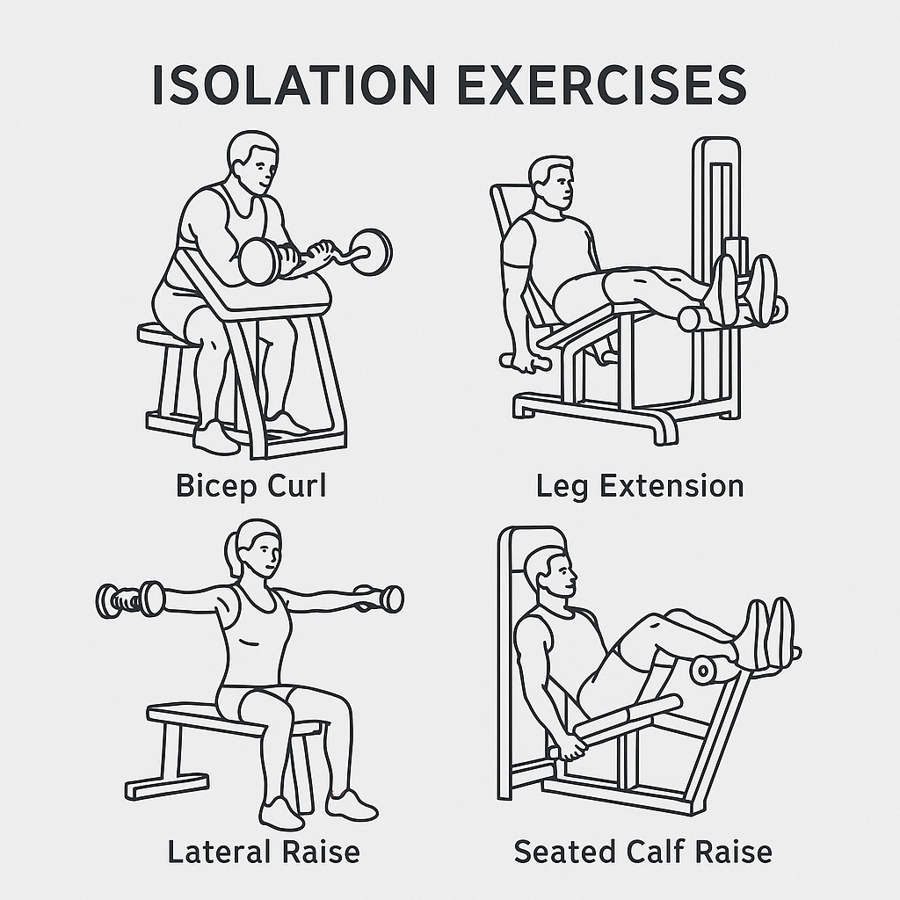

Gym Basics
This is where I will introduce various gym terminologies, workout splits, and gym etiquette.
First off, basic terminologies and concepts
- Rep: Stands for repetition, meaning how many repetitions of that particular exercise you will do.
- Set: A set is often combined with reps—e.g., 3 sets of 10—which means you complete 10 repetitions at a time and repeat this 3 times. Often, we take short breaks between sets.
- “A plate”: A plate usually refers to a 45 lb plate. If I tell you to put on a plate, I don't mean a 10-pound plate.
- Note: A straight lifting bar often weighs 45 lb, so if I say I can bench 135 lb, that would be a plate on each side plus the bar.
- “PR”: Short for Personal Record, mostly used for compound movements like squat, bench, and deadlift. It's the heaviest weight you can perform for one repetition; for example, my bench PR is 225 lb.
- Spotting: Usually for bench. If you think you might fail on a certain weight, ask the biggest guy nearby for a spot. A spotter is someone who prevents you from getting pinned under the bar, so don't be shy about asking.
- SBD: Short for Squat, Bench Press, and Deadlift. Mostly used for strength measurement and often called the “Big Three.”
- Cut: Cut in gym term is a way for someone to say they are losing fat, they are not on a weightloss since their goal is to keep as much muscle weight on while cutting fat
- Bulk: Gym term for weight gaining
Now… gym etiquette
Honestly, no one really covers this, but I believe it's one of the most crucial things all beginners should understand. No one will look down on you if you seem clueless—people mind their own business, and no one will mock you. So don't let that stop you from going to the gym. Ask for help and you might get great advice—and even a potential gym buddy. However, if your gym etiquette sucks, people will literally watch you die on the bench (at least I will).
UNRACK YOUR WEIGHTS AFTER YOU ARE DONE!!! I don't care if you can squat or bench 1,000 pounds—unrack your weight. Sure, on machines you can leave a plate on, but for free-weight bars unload everything. If you need help, ask the 60-year-old janitor lady.
Clean the equipment after you're done. No one wants to touch your sweat, so grab a paper towel, wet it, and wipe the equipment down. I also suggest wiping equipment before you use it—you never know who used it last or if they had a skin condition.
If someone asks you for a spot on the bench, DO NOT TOUCH THE BAR unless it's going down (when they're trying to push the weight up). Even if they stall for 3 seconds, as long as the bar isn't falling, keep your hands off.
If you're resting between sets, don't go braindead scrolling TikTok forever when people are waiting. I'm not suggesting you jump into your next set while you're huffing and puffing. For compound movements, take as long as you need to recover. For isolation work on machines, keep rest to 1-2 minutes max.
Don't hoard all the weights. This happens mostly with dumbbells. You don't need supersets as a beginner—don't take four different weights and hover forever; you'll likely need at most two.
Compound vs. Isolation Movements
As you might have noticed, I've been emphasizing isolation movements and compound movements. What are they?
Compound Movements
Compound movements refer to exercises that require more than one muscle group. Common examples are squat, bench press, deadlift, and overhead press. While machine bench presses or lat-pulldown machines also use multiple muscles, classic compound lifts often engage the whole body. For example, the bench press might seem like a chest-only exercise, but it also uses your triceps, biceps, lats, abs, shoulders, traps, and even your legs. If you rely only on your chest, you'll struggle to gain strength and may increase your risk of injury. Because compound movements work multiple muscle groups at once, I strongly advocate that beginners practice them. You may need machines at first to build basic strength, but compound movements will get you to your dream physique faster.

Isolation Movements
Isolation movements are often done on machines rather than with a free bar. Their purpose is to target a specific muscle group and prevent others from taking over—for example, preacher curls or leg extensions. You might wonder, “If compound movements cover all muscles, why bother with isolation?” I wondered the same thing as a novice; I did only SBD until I got injured—I was repping 300 lb squats, but my biceps were too weak to handle them. Isolation movements become crucial once you reach the intermediate phase: your major muscle groups may be developed, but weaker muscles can hold you back. I would not advise beginners to make isolation movements the majority of their workouts; I tried that myself and saw barely any gains. Use isolation work to build basic strength, then focus on compound movements.
